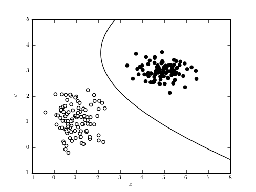

Simple Gaussian Naive Bayes Classification¶
Figure 9.2
A decision boundary computed for a simple data set using Gaussian naive Bayes classification. The line shows the decision boundary, which corresponds to the curve where a new point has equal posterior probability of being part of each class. In such a simple case, it is possible to find a classification with perfect completeness and contamination. This is rarely the case in the real world.
{kind=link}
# Author: Jake VanderPlas
# License: BSD
# The figure produced by this code is published in the textbook
# "Statistics, Data Mining, and Machine Learning in Astronomy" (2013)
# For more information, see http://astroML.github.com
# To report a bug or issue, use the following forum:
# https://groups.google.com/forum/#!forum/astroml-general
import numpy as np
from matplotlib import pyplot as plt
from matplotlib import colors
from sklearn.naive_bayes import GaussianNB
#----------------------------------------------------------------------
# This function adjusts matplotlib settings for a uniform feel in the textbook.
# Note that with usetex=True, fonts are rendered with LaTeX. This may
# result in an error if LaTeX is not installed on your system. In that case,
# you can set usetex to False.
from astroML.plotting import setup_text_plots
setup_text_plots(fontsize=8, usetex=True)
#------------------------------------------------------------
# Simulate some data
np.random.seed(0)
mu1 = [1, 1]
cov1 = 0.3 * np.eye(2)
mu2 = [5, 3]
cov2 = np.eye(2) * np.array([0.4, 0.1])
X = np.concatenate([np.random.multivariate_normal(mu1, cov1, 100),
np.random.multivariate_normal(mu2, cov2, 100)])
y = np.zeros(200)
y[100:] = 1
#------------------------------------------------------------
# Fit the Naive Bayes classifier
clf = GaussianNB()
clf.fit(X, y)
# predict the classification probabilities on a grid
xlim = (-1, 8)
ylim = (-1, 5)
xx, yy = np.meshgrid(np.linspace(xlim[0], xlim[1], 71),
np.linspace(ylim[0], ylim[1], 81))
Z = clf.predict_proba(np.c_[xx.ravel(), yy.ravel()])
Z = Z[:, 1].reshape(xx.shape)
#------------------------------------------------------------
# Plot the results
fig = plt.figure(figsize=(5, 3.75))
ax = fig.add_subplot(111)
ax.scatter(X[:, 0], X[:, 1], c=y, cmap=plt.cm.binary, zorder=2)
ax.contour(xx, yy, Z, [0.5], colors='k')
ax.set_xlim(xlim)
ax.set_ylim(ylim)
ax.set_xlabel('$x$')
ax.set_ylabel('$y$')
plt.show()